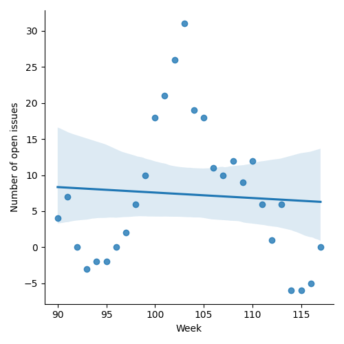
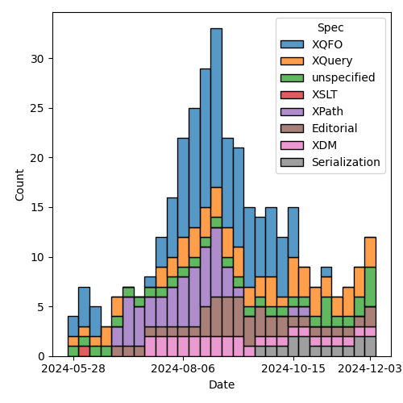
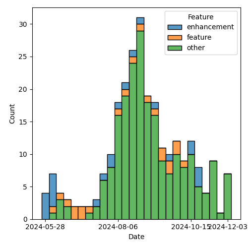

QT4 CG Meeting 102 Minutes 2024-12-10
Meeting index / QT4CG.org / Dashboard / GH Issues / GH Pull Requests
Table of Contents
- Draft Minutes
- Summary of new and continuing actions
[0/7] - 1. Administrivia
- 2. Technical agenda
- 3. Any other business
- 4. Adjourned
Draft Minutes
Summary of new and continuing actions [0/7]
[ ]QT4CG-080-07: NW to update the build instructions in the README[ ]QT4CG-082-02: DN to work with MK to come to agreement on the fn:ranks proposal[ ]QT4CG-088-01: NW to consider how best to add a dedication to MSM.[ ]QT4CG-088-04: [Someone] needs to update the processing model diagram needs vis-a-vis the static typing feature[ ]QT4CG-089-01: CG to draft a PR that attempts to resolve the operators described in #755 to a smaller number of orthogonal choices.[ ]QT4CG-097-02: MK to make the XSD schema component references into links to XSD[ ]QT4CG-097-03: DN to proposal an axis for accessing the siblings of a node.
1. Administrivia
1.1. Roll call [9/12]
[X]David J Birnbaum (DB)[X]Reece Dunn (RD)[ ]Sasha Firsov (SF)[X]Christian Grün (CG)[ ]Joel Kalvesmaki (JK)[X]Michael Kay (MK)[X]Juri Leino (JLO)[X]John Lumley (JWL)[X]Dimitre Novatchev (DN)[X]Wendell Piez (WP)[ ]Ed Porter (EP)[X]Norm Tovey-Walsh (NW). Scribe. Chair.
1.2. Accept the agenda
Proposal: Accept the agenda.
Accepted.
1.2.1. Status so far…
These charts have been adjusted so they reflect the preceding six months of work.

Figure 1: “Burn down” chart on open issues

Figure 2: Open issues by specification

Figure 3: Open issues by type
1.3. Approve minutes of the previous meeting
Proposal: Accept the minutes of the previous meeting.
Accepted.
1.4. Next meeting
This next meeting is planned for 17 December. That will the last meeting in 2024.
JWL gives regrets.
The CG does not plan to meet on 24 or 31 December.
1.5. Review of open action items [4/11]
(Items marked [X] are believed to have been closed via email before this agenda was posted.)
[ ]QT4CG-080-07: NW to update the build instructions in the README[ ]QT4CG-082-02: DN to work with MK to come to agreement on the fn:ranks proposal[ ]QT4CG-088-01: NW to consider how best to add a dedication to MSM.[ ]QT4CG-088-04: [Someone] needs to update the processing model diagram needs vis-a-vis the static typing feature[ ]QT4CG-089-01: CG to draft a PR that attempts to resolve the operators described in #755 to a smaller number of orthogonal choices.[ ]QT4CG-097-02: MK to make the XSD schema component references into links to XSD[ ]QT4CG-097-03: DN to proposal an axis for accessing the siblings of a node.[X]QT4CG-101-01: MK to add a way to query the sort order of a map[X]QT4CG-101-02: MK to review the option “random” for a map order option[X]QT4CG-101-03: MK to provide a bit more of the motivation for map ordering.[X]QT4CG-101-04: MK to consider how map ordering applies to records.
1.6. Review of open pull requests and issues
1.6.1. Blocked
1.6.2. Merge without discussion
The following PRs are editorial, small, or otherwise appeared to be uncontroversial when the agenda was prepared. The chairs propose that these can be merged without discussion. If you think discussion is necessary, please say so.
- PR #1643: 1103 Normalize line endings in CSV prior to parsing
- PR #1642: 1637 Add/Amend notes to fn:function-lookup
- PR #1641: 1554-change-formal-specification-heading
- PR #1640: 1639 Add missing rule for elements-to-maps
- PR #1629: 1628 Clarify rules for XQuery version declaration
Proposal: Merge without discussion.
Accepted.
1.6.3. Close without action
It has been proposed that the following issues be closed without action. If you think discussion is necessary, please say so.
- Issue #1592: fn:elements-to-maps: Observations
- Issue #1588: Move the Streamability chapter?
- Issue #1457: Common name for maps & arrays
Proposal: Close without further action.
Accepted.
1.6.4. Substantive PRs
The following substantive PRs were open when this agenda was prepared.
- PR #1638: 1634 Update description of decimal properties in the static context
- PR #1636: Initial conversion of EXPath Binary/File
- PR #1633: 1627 Tweaks to schema type functions
- PR #1622: 1619 Specify XSLT map-for-key function
- PR #1620: 332 Add options for fn:path
- PR #1617: 1606 Drop named item types, refine named record types, esp in XSLT
- PR #1616: A little cleanup; support function/xfunction globally
- PR #1609: 564 Ordered Maps
- PR #1587: 557 Add fn:binary-resource
1.6.5. Required for V4.0
The following issues are labeled “required for V4.0”.
- Issue #1252: Add a new function `fn:html-doc`
- Issue #1240: $sequence-of-maps ? info()
- Issue #1238: XSLT on-no-match="shallow-copy-all" - revised rules
- Issue #1127: Binary resources
- Issue #1045: Functions to manage namespace usage
- Issue #1021: Extend `fn:doc`, `fn:collection` and `fn:uri-collection` with options maps
- Issue #1011: fn:transform() improvements
- Issue #986: Numeric Comparisons
- Issue #967: XPath Appendix I: Comparisons
- Issue #826: Arrays: Representation of single members of an array
- Issue #748: Parse functions: consistency
- Issue #675: XSLT streaming rules for new constructs
- Issue #501: Error handling: Rethrow errors; finally block
- Issue #490: Control over schema validation in parse-xml(), doc(), etc.
- Issue #407: XSLT-specific context properties used in function items
- Issue #272: Setting parameter values in xsl:use-package
2. Technical agenda
2.1. PR #1636: Initial conversion of EXPath Binary/File
See PR #1636
JWL has done an initial conversion of the EXPath binary and file specifications to the QT4CG build system. They won’t (usefully) build before they are committed to the repo, but in the short term, you can see formatted versions here:
- https://qt4cgtest.nwalsh.com/branch/johnlumley-expath/expath-binary-40/Overview.html
- https://qt4cgtest.nwalsh.com/branch/johnlumley-expath/expath-file-40/Overview.html
- NW: I propose that we merge these.
- DN: It seems to me that the names are a bit odd. Binary could be part of file. Maybe we should give them better names.
- MK: Are we going to display them on the homepage.
- WP: Does conformance include some optional features? I’m in favor of moving forward, but escape hatches.
- JWL: There are cross links to conformance in both of them; I’ve tried to make
them refer to F&O where F&O tells you how to do things. Those links are in.
- … The binary module is very simple. It only deals with the handling of base64/hexBinary types: basically byte sequences.
- … Some of that stuff is already implicit in the current specs.
- … The file specification is much trickier; I think there will be a lot of discussion there.
- JLO: Regarding binary, when I was testing and playing around with different implementations, I found that a lot of the binary module is already present because there’s a lot of overlap with hexBinary/base64Binary.
- JWL: Those types were well established types; it was a question of putting functions that dealt with that type on top of the bytes held in those types.
- DN: Is the question of asynchrony dealt with at all. Or all they all synchronous.
- CG: It’s all synchronous.
- DN: Maybe we need to think about asynchrony.
- CG: All of the functions are synchronous, but they are side-effecting and labeled as non-deterministic. A clean solution in the main might be hard, but the file module has worked fine for ten years with implementation defined behavior.
- RD: The main issue is reordering expressions in XPath and XQuery and not synchronous vs. asynchronous.
- MK: Well, both are relevant and they’re not separable.
- … I reread the paper that Adam Retter and Debbie Lockett wrote a few years ago about asynchronous and non-deterministic tasks.
- … In particular, it tries to tackle both problems with the same solution.
- … File is much trickier.
- RD: Is there anything from the AR/DL proposal that would need implementing in XPath and XQuery?
- MK: It provides ideas for a way forward.
Proposal: Merge this PR
Accepted.
2.2. PR #1587: 557 Add fn:binary-resource
See PR #1587
- MK: Let’s defer until we’ve reviewed the file and binary specs and see how the relate.
2.3. PR #1609: 564 Ordered Maps
See PR #1609
- MK: I think it’ll be most productive today to talk about the principles
because there’s been pushback on the principles.
- … How we got here: a long time ago, I raised an issue saying that sorted maps would be a good idea. That was in response to a use case about searching maps.
- … More recently, looking at XML to JSON conversion has raised issues about preserving order. The current functions destroy order and that’s problematic for users.
- … The two issues seemed to be related, so I tried to tackle them both. We’d extend the data model to provide a property for ordering. That would allow the current “random” order and two new orders, “insertion-last” (primarily used to retain JSON order when you parse JSON into a map; the serialization would retain that order and small changes would be small changes in the output), and “sorted-by-key” (primarily for key or range searches).
- … Doing them together seemed to make more sense than separately. CG has given some pushback, especially on sorted maps. Do we need either or both or neither?
- CG: I’m torn. On the one hand, I see the general advantage of having different
data structures and collections. I think this would be a pretty big change: it
introduces two data structures at once. In part, because there may be other
implementors to consider. Immutable maps can be quite challenging, adding
order preserving and sorted versions might be that much harder. I think the
two extensions should be discussed separately. For the insertion-last flavor,
I think that lots of other languages (Python, JavaScript, etc.) that preserver
order. We’ve had lots of experience with users who find the unordered behavior
of XPath confusing.
- … Always doing it that way might be good; it’s a performance issue but the solutions are well known.
- … For sorted maps, I have more reservations. There are other things we could do, with comparitors for example. It’s mostly about improving performance. We already provide functions to let folks get at maps. Unlike insertion-last, they’re not a game changing feature.
- RD: On the insertion order, there are various built-in classes for ordered
maps in different languages. A lot of the implementation languages will
provide insertion-order dictionaries for you. On sorted maps, the main use
cases I see there are in serialization getting the output in sorted order for
formatting, and also in terms of enumerating keys. But if you’re enumerating
keys, you could use an
order byconstraint to get the sort order. From an implementor perspective, the only feature I see is getting the keys in sorted order but that could be done in the serializer. - WP: I’m going to be a little niave, but my first thought is why aren’t you
using XML? I believe MK when he says he has a requirement here, but I wonder
given the depth of the design change if it isn’t worth looking at other
approaches rather than changing the object model to support this.
- … Today, maps and JSON are very similar and I think that’s a virtue.
- JLO: I think changing the default behavior of maps to insertion order is a good idea.
- DN: We should definitely understand that “ordered” is different from “sorted”.
In C# those are very different types. Sorted variants can be much slower.
It seems to me that we haven’t considered the performance implications.
In C#, an ordered map has the same performance as a regular map.
- … Order isn’t used for regular map operations; it’s only used for serializing.
- MK: I think there’s always a memory implication; an ordered map uses more memory than an ordinary map.
- DN: True, but that isn’t usually an issue because maps don’t often have
thousands of keys.
- … I’d prefer to have separate ordered map types. It seems to me that ordered maps would be used primarily by users who want to serialize to JSON and that seems like a niche case. So maybe we shouldn’t touch the current maps, just a separate type.
- CG: The only thing I wanted to add is that there are other cases for orderedness. For example, creating the manifest for an archive, where the order of the files is important.
- DN: I think that’s a serialization question too.
- CG: This isn’t serialization, it’s about creating the archive. But there are many other cases where users have created maps and expect them to be in the order they created them.
- DN: Sorted maps also have more memory consumption because they require data structures to keep the order.
NW: I think the consensus is in favor of ordered maps, perhaps by default.
- MK: I’m nervous about whether we’d be imposing a performance cost on users who don’t need the feature.
- CG: I have similar concerns. I’d like to find a compromise. One way might be to enforce order when it’s created, but allow updates to aribtrarily destroy the order. For many simple cases, where you already have an order, it could be helpful to retain the order. But then you have to decide which operations preserve order.
- MK: I think an important use case is when you load a JSON data structure and make a small transformation to it. You want the result to keep the changes minimal.
- WP: Could we say something softer about preserving order?
- … Identify the ones where we know it might be lost.
- MK: Once you’ve lost the order, it’s not recoverable…
- … DN has talked about doing it with distinct types, that would give you support for different operations and I think it’s a nice feature that the operations aren’t different.
- … Adding a property to the data model but not changing the type system makes it simpler.
- … The big question is: do we want two or three different kinds of maps or not?
- … One option is to leave it as it is, one is to say make everything ordered, another is to put it under user control.
- … I’m inclined to the somewhat conservative view that we leave the behavior as it has been unless users specificially ask for the new behavior.
- DN: I’m glad that I heard concern about adding order to the regular maps. I
still think the best way to go forward is to have a separate ordered map type.
What MK said about complicating the data model is maybe not the case. We could
say that this new type has all the features of the existing map, but with a
few new properties.
- … Changing the current map could be very confusing for users. It seems to me that ordered maps would be used in very few use cases. That’s another reason to make them a separate type.
- JLO: Would an option that could be declared at the top of an XQuery main
module be a way foward?
- … Then I’d assume all the operations would preserve order.
- MK: Making it a configuration property that’s scoped to a module means you
have to create maps in different modules to have different scopes.
- … The implementation still has to support both, but it’s harder for the user to control. It should be something they do when they construct the map.
- … If we didn’t do anything, then one could consider having an implementation feature to do it, but that’s inflexible for users.
- RD: Implementors already have a large degree of freedom in the data structures they implement. This is providing a mechanism for users to have guarantees. From the XQuery/XPath side, it’s more like working with interfaces than the concrete implementations.
- MK: That’s true. It’s not declaring an implementation, but a property that you want on the map.
NW: I think the consensus is in favor of ordered maps, but not by default. But sorted maps aren’t gaining consensus.
- DN: In addition to what I already said about preferring a new type of map, I want to say that it would be very easy to switch from a map to an ordered map by having a constructor that takes a comparitor.
Related links from the Zoom chat:
- Java – https://docs.oracle.com/javase/8/docs/api/java/util/LinkedHashMap.html
- C# – https://learn.microsoft.com/en-us/dotnet/api/system.collections.specialized.ordereddictionary?view=net-9.0
- Rust – https://docs.rs/indexmap/latest/indexmap/
- For immutable variants (which we will need), the VAVR and PCollections libraries could be used.
- CG: If we had ordered maps, then you can imagine an “at position” function for ordered maps.
2.4. PR #1616: A little cleanup; support function/xfunction globally
See PR #1616
- NW: May I merge this?
- MK: Yes, please do.
3. Any other business
None heard.